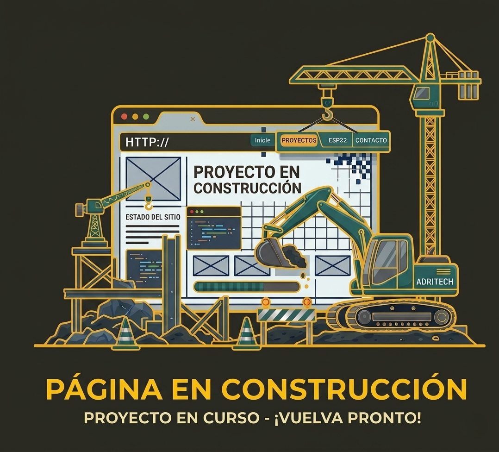

Desarrollo soluciones técnicas adaptadas a cada fase del diseño. A continuación, puedes explorar mis principales áreas de especialización:

Modelado 3D
Diseño y desarrollo de piezas y ensamblajes en 3D utilizando software CAD avanzado. Capacidad para proyectar desde componentes personalizados hasta mecanismos funcionales. Compatibilidad y manejo de formatos estándar.

Impresión 3D
Experiencia en fabricación mediante impresión 3D en filamento y resina. Capacidad para optimizar el proceso según las necesidades de cada pieza, trabajando con materiales estándar, flexibles o técnicos para lograr excelentes resultados en prototipos y componentes funcionales.

Diseño y fabricación de PCBs
Diseño de circuitos impresos desde el esquemático hasta los archivos Gerber listos para fabricación. Trabajo con Proteus y KiCad, aplicando buenas prácticas de enrutado, gestión térmica e integridad de señal. Acompañamiento durante el proceso de fabricación y montaje SMD/THT.

Programación
Desarrollo de firmware para microcontroladores Arduino, ESP32 y STM32, así como aplicaciones de escritorio y scripts de automatización en Python y C++. Experiencia en comunicaciones serie, Wi-Fi, MQTT, interfaces gráficas TFT y sistemas de adquisición de datos.
Escaneado 3D
Digitalización de objetos físicos mediante escáner 3D para obtener mallas poligonales de alta fidelidad. Útil para ingeniería inversa, replicación de piezas sin planos o integración de geometría real en proyectos CAD. Entrega en formatos OBJ, STL o STEP tras procesado y limpieza de la malla.